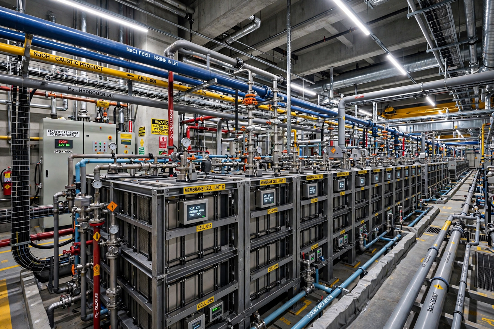

| Chloralkali process | |
|---|---|
 Membrane-cell chloralkali electrolysis | |
| Feedstock | Sodium chloride brine |
| Products | Chlorine, sodium hydroxide, hydrogen |
| Technologies | Membrane cell; diaphragm cell; mercury cell (legacy) |
| Overall reaction | 2 NaCl + 2 H2O → Cl2 + H2 + 2 NaOH |
The chloralkali process (also chlor-alkali) is an industrial process for the electrolysis of sodium chloride solutions to produce chlorine and sodium hydroxide (caustic soda), two commodity chemicals that are fundamental to the chemical industry, along with hydrogen as a co-product. It is one of the largest electrochemical processes in the world and a major consumer of industrial electricity.
At the anode, chloride ions are oxidized to chlorine gas; at the cathode, water is reduced to hydrogen gas and hydroxide ions, leaving sodium hydroxide in solution. The key engineering challenge is preventing the chlorine from mixing with the hydroxide, which would form hypochlorite and chlorate, and keeping hydrogen and chlorine from forming an explosive mixture.
Three cell technologies have been used. The mercury cell (Castner–Kellner) process forms a sodium amalgam at a flowing mercury cathode and yields very pure caustic soda, but mercury losses caused severe environmental contamination—including contributions to Minamata-type poisoning concerns—and the technology has been largely phased out. The diaphragm cell separates the electrodes with a porous diaphragm (historically asbestos, now polymeric), producing a weaker, salt-contaminated caustic liquor that must be concentrated. The modern membrane cell uses a cation-exchange membrane (such as Nafion) that passes sodium ions but blocks hydroxide and chloride back-migration; it is the most energy-efficient and now dominates new capacity.
Chlorine feeds the manufacture of PVC and other plastics, solvents, and disinfectants; caustic soda is used in pulp and paper, alumina refining, soaps, and textiles. Because the products are made in fixed proportions, the industry balances its output against the differing demand cycles for chlorine and caustic soda, a tension known as the chloralkali balance.